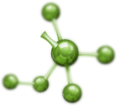

NikoStop Antistress
Σταγόνες για εύκολο κόψιμο του καπνίσματος
- Πλήρης απαλλαγή από το κάπνισμα για 1 πρόγραμμα
- Χωρίς άγχος, οργή και καμία ενόχληση
- Ακόμη και για τους πιο βαρείς καπνιστές
Ξεκίνα μια ελεύθερη ζωή τώρα!
Γιατί δεν μπορώ να
κόψω το κάπνισμα;
- Απελπισία
- Σύγχυση
- Φόβος
- Άγχος
- Ερεθισμός
Έτσι ήταν
πριν!
Παραγγελία
Έτσι ήταν πριν!
Σύγκριση της αποτελεσματικότητας των διάφορων μέσων κατά του καπνίσματος
Τα συμβατικά μέσα κατά το κάπνισμα και τα υποκατάστατα της νικοτίνης ΔΕΝ βοηθούν τον άνθρωπο να υπομείνει το άγχο και την ταλαιπωρία που προκύπτουν όταν κόβουν το καπνίσμα.
Σε αντίθεση με τα συμβατικά μέσα, που ΔΕΝ σας βοηθούν όταν θέλετε να κόψετε το κάπνισμα, το NikoStop Antistress λύνει το πρόβλημα της δυσφορίας για 1 πρόγραμμα.
Заказать

- 


Τι κάνει το NikoStop
τόσο αποτελεσματικό;
-
Βιταμίνες B1, B3, B6Εξασφαλίζουν τη δραστηριότητα του νευρικού συστήματος, την εξάλειψη σύνδρομο του καπνίσματος, βελτιώνουν τη λειτουργία του εγκεφάλου, αναζωογονεί τον οργανισμό.
-
ΛευκάγκαθαΑποτρέπει τη γήρανση των αγγείων , βελτιώνει την κυκλοφορία του αίματος, ομαλοποιεί την λειτουργία της καρδιάς και του εγκεφάλου, δρα ήρεμα στο νευρικό σύστημα, αναζωογονεί ολόκληρο το σώμα.
-
ΤρυπτοφάνηΑπαραίτητο αμινοξύ, το χημικό μυστικό της χαράς. Εξασφαλίζει την καλή διάθεση, την ηρεμία, την υγιεινή και την ποιότητα του ύπνου.
-
ΜελίσσαΤέλεια βοηθά κατά του άγχου, της νευρικότητας και της κατάθλιψης που προκαλείται από την απουσία της νικοτίνης, βελτιώνει τη μνήμη και τη συγκέντρωση.
-
ΛεβάνταΙσχυρό προσαρμογόνο που βοηθά εύκολα να συνηθίσετε στη ζωή χωρίς τσιγάρο. Καθαρίζει τον οργανισμό από τις τοξίνες. Προστατεύει από εναλλαγές της διάθεσης, αυξάνει τη συγκέντρωση και την απόδοση.

Τι επίδραση θα πάρω από το
NikoStop Antistress;
- Αντιμετώπιση των συμπτωμάτων της διακοπής του καπνίσματος
- Για τον καθαρισμό του σώματος από τη νικοτίνη και πίσσα
- Βελτίωση της υγείας, συγκέντρωση της προσοχής
- Υγιή ύπνος και αποκατάσταση του οργανισμού
- Νέα συνήθεια - να μην κάπνίζετε
 Παραγγελία
Παραγγελία
Οι ειδικοί συνιστούν

Ξεκίνα μια ελεύθερη ζωή τώρα!
Η εξάρτηση από τη νικοτίνη απαιτεί μια ολοκληρωμένη και εξαιρετικά ατομική προσέγγιση.
Πολύ συχνά μαι καθαρή φαρμακευτική θεραπεία δεν είναι αρκετή. Επειδή το κάπνισμα ενσωματώνεται στη ζωή του ανθρώπου. Το κάπνισμα συνδέεται για το άτομο με ευχάριστα πράγματα στη ζωή του: τις διακοπές, την ψυχαγωγία, το σεξ. Και όταν φεύγει το κάπνισμα από τη ζωή του ανθρώπου φεύγει η χαρά.
Γι ' αυτό συνιστώ στους ασθενείς μου τις σταγόνες NikoStop. Χάρη στα άριστα επιλεγμένα συστατικά η διαδικασία της απελευθέρωσης και της δημιουργίας των νέων νευρωνικών σχέσεων περνά ανώδυνα και άνετα.
Τα υμπτώματα στέρησης κατά τη χρήση τις σταγόνες NikoStop στην πραγματικότητα δεν υπάρχουν.
Τα υμπτώματα στέρησης κατά τη χρήση τις σταγόνες NikoStop στην πραγματικότητα δεν υπάρχουν.
ΠερισσότεραΑλέξης Γεωργιάδης Ο κορυφαίος εμπειρογνώμονας του Διεθνούς κέντρου της θεραπείας της εξάρτησης από τα τσιγάρα
Κριτικές για το NikoStop
Οι άλλοι υπόσχονται -
Εμείς σας δίνουμε ΕΓΓΎΗΣΗ

Είμαστε σίγουροι για την ποιότητα των προϊόντων μας! Και εμείς δεν δίνουμε κούφιες υποσχέσεις. Αν εντός 30 ημερών οι σταγόνες του NikoStop δεν θα σας βοηθήσουν, θα σας επιστρέψουμε τα χρήματά σας.
Για περισσότερες λεπτομέρειες σχετικά με τους όρους επιστροφής


NikoStop Antistress
Σταγόνες για εύκολο κόψιμο του καπνίσματος
- Πλήρης απαλλαγή από το κάπνισμα για 1 πρόγραμμα
- Χωρίς άγχος, οργή και καμία ενόχληση
- Ακόμη και για τους πιο βαρείς καπνιστές